Escolha do Protagonista
O início da jornada em Teyvat: escolha entre Lumine e Aether para ser o herói que guiará esta grande aventura.
Explore a história de uma das aventuras mais marcantes dos videogames. Conheça Teyvat, seus heróis e os segredos que atravessam gerações.
Conhecer o jogo →
Conheça os principais dados de Genshin Impact.
Genshin Impact é uma aventura que acompanha o Viajante em uma jornada pelo continente de Teyvat. Ao longo de sua trajetória, o jogador explora diferentes nações, enfrenta desafios elementais e descobre os mistérios que envolvem os deuses e o destino do mundo.
O início da jornada em Teyvat: escolha entre Lumine e Aether para ser o herói que guiará esta grande aventura.

Mundo aberto, baús, enigmas, missões e exploração. Formação de equipes com até quatro personagens.
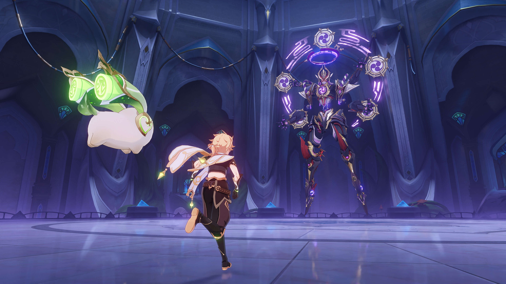
Enfrente chefes formidáveis em batalhas intensas que testam todas as suas habilidades e estratégias.

Libere a ultimate devastadora dos personagens e domine o campo de batalha com um poder supremo.

Combine Hydro, Pyro e outros elementos para criar reações poderosas e vencer qualquer inimigo.

O brilho dourado que todo viajante deseja: o momento exato em que um lendário herói 5 estrelas se junta à sua equipe.
Conheça as principais plataformas onde o jogo está disponível.
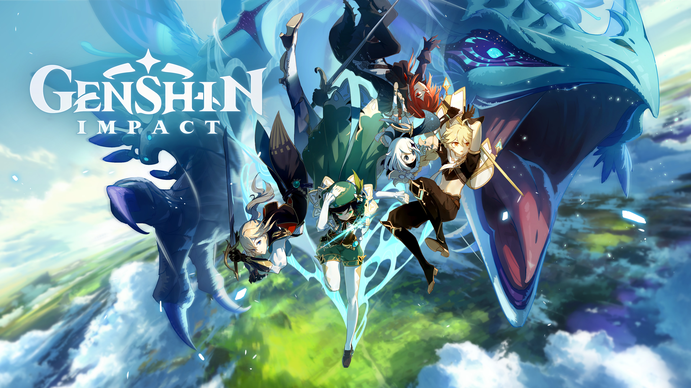
A experiência original que levou o vasto mundo de Teyvat aos computadores e celulares de milhões de jogadores.
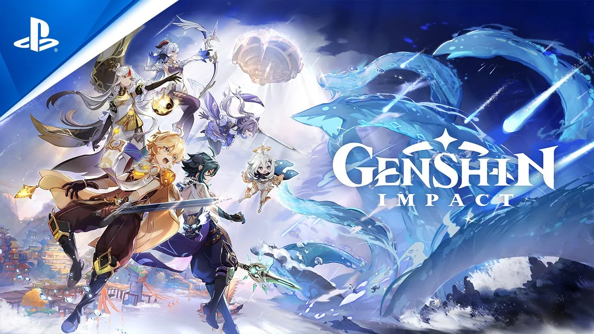
Gráficos aprimorados e tempos de carregamento rápidos para explorar as nações elementais na telona.
Conheça a jornada do Viajante e os acontecimentos que envolvem as sete nações.
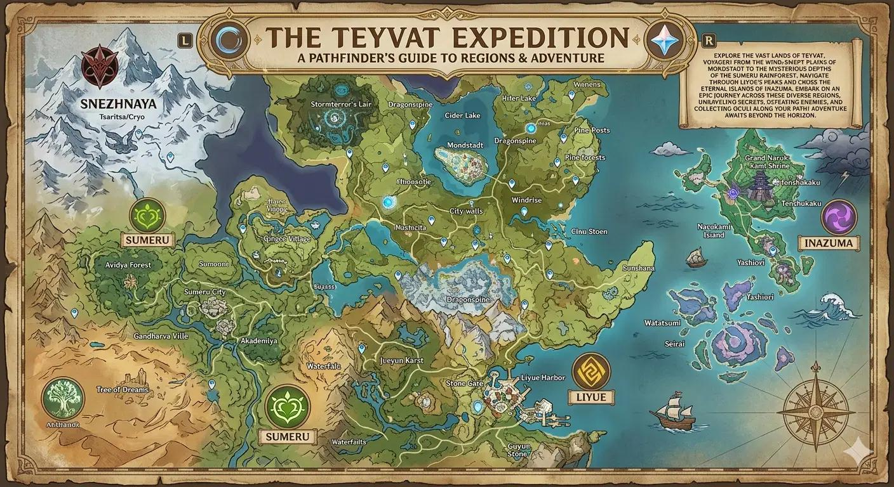
Teyvat é um mundo mágico governado por sete deuses elementais (Arcontes), onde o Viajante, um forasteiro de outro universo, busca reencontrar seu irmão gêmeo após ambos terem sido separados e privados de seus poderes por uma divindade desconhecida. Acompanhado de sua guia Paimon, ele percorre as sete nações — ajudando a libertar Mondstadt de um dragão corrompido, testemunhando a abdicação divina em Liyue, encerrando o isolamento tirânico de Inazuma, resgatando a deusa da sabedoria em Sumeru, impedindo uma profecia apocalíptica de inundação em Fontaine e lutando contra as forças do Abismo em Natlan — enquanto os agentes Fatui de Snezhnaya coletam os corações divinos dos Arcontes (Gnoses) para uma futura rebelião contra Celestia, a morada dos deuses. No decorrer da jornada, o Viajante descobre que seu gêmeo despertou séculos antes, testemunhou a destruição da antiga nação sem deuses de Khaenri'ah pelas mãos de Celestia e assumiu a liderança da Ordem do Abismo, pedindo que o Viajante conclua sua travessia para compreender a verdadeira natureza de Teyvat antes do reencontro final.
Conheça os personagens que fazem parte dessa aventura.
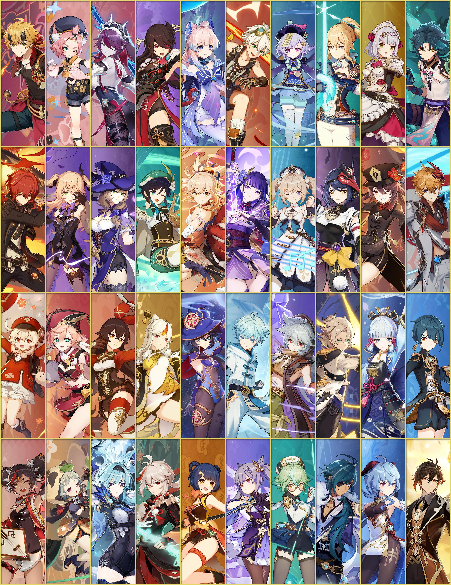
Descubra as nações, os domínios e os lugares importantes do mapa.
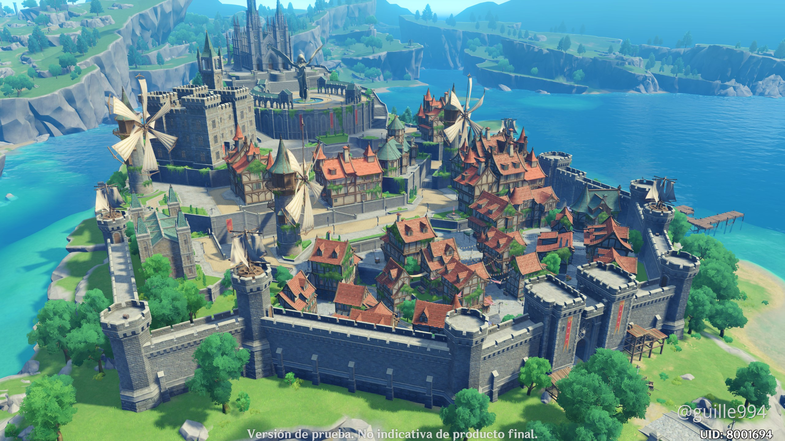
Liberdade e paisagens medievais
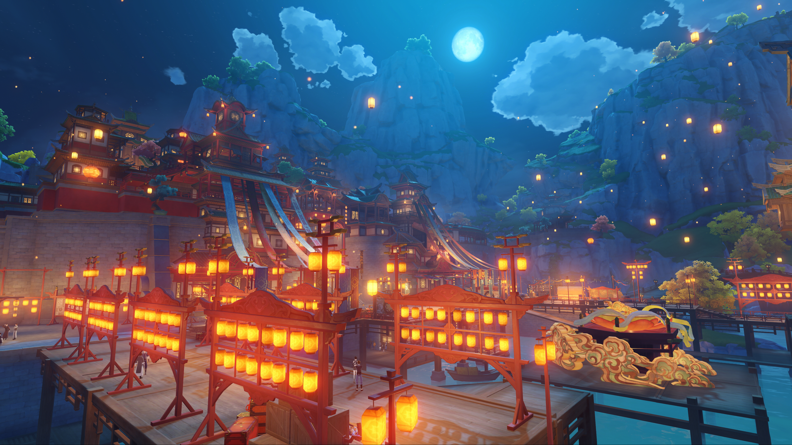
Tradições, comércio e montanhas
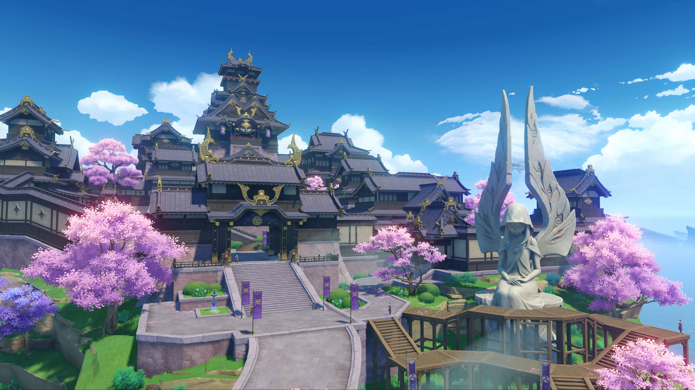
Ilhas, eternidade e cultura inspirada no Japão
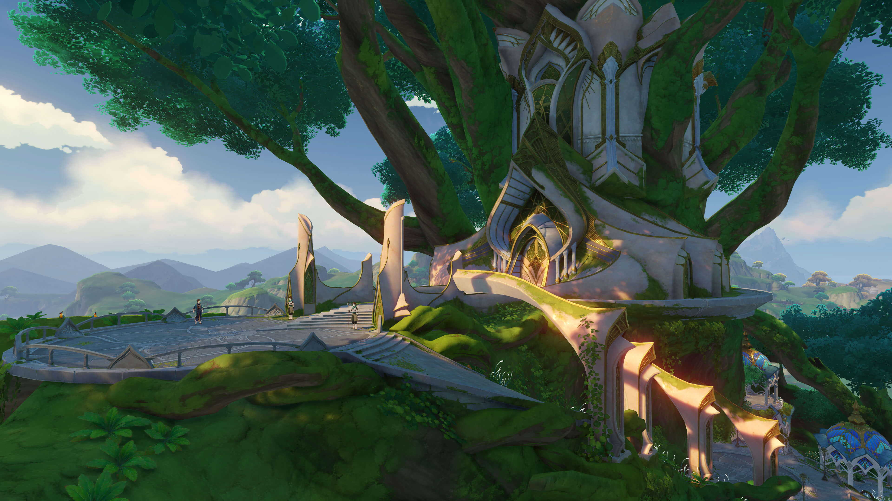
Conhecimento, florestas e desertos
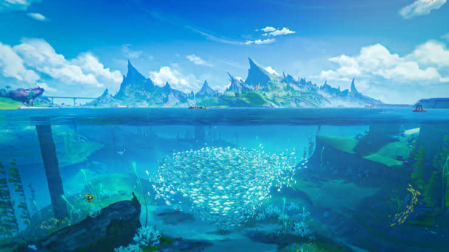
Justiça, tecnologia e artes
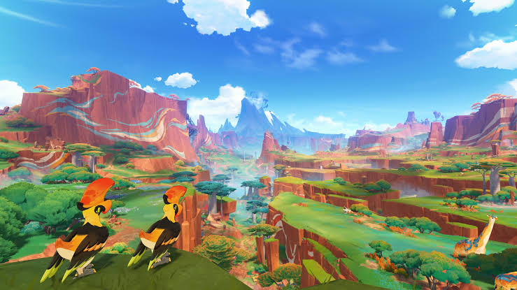
Cultura guerreira e conexão com os dragões
https://genshin.hoyoverse.com/pt/home